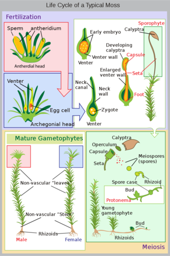
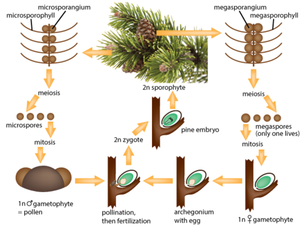

Click on the image above to view the table
This lush green landscape is thickly carpeted with trees and myriad of other plants. Much of Earth’s land is dominated by plants. Yet compared to our active existence as animals, plants are—literally—rooted to the ground. Their sedentary lives may seem less interesting than the active lives of animals, but plants are very busy doing extremely important work. All plants are chemical factories. Each year, they transform huge amounts of carbon (from carbon dioxide) into food for themselves and virtually all other land organisms.
Plants are complex organisms that carry out complex tasks. But unlike animals, they don’t have nerves, bones, or muscles to do their work. How do plants do it? Read on to find out.
Like animals, plants have organs that are specialized to carry out complex functions. An organ is a structure composed of more than one type of tissue. A tissue, in turn, is a group of cells of the same kind that do the same job. In this lesson, you will read about the tissues that do the important work of plants. The cells that make up plant tissues are described first.
Plant cells resemble other eukaryotic cells in many ways. For example, they are enclosed by a plasma membrane and have a nucleus and other membrane-bound organelles. A typical plant cell is represented by the diagram in Figure below .
Plant cells have all the same structures as animal cells, plus some additional structures. Can you identify the unique plant structures in the diagram?
Structures found in plant cells but not animal cells include a large central vacuole, cell wall, and plastids such as chloroplasts.
There are three basic types of cells in most plants. The three types are described in Table below . The different types of plant cells have different structures and functions.
Click on the image above to view the table
All three types of plant cells are found in most plant tissues. Three major types of plant tissues are dermal, ground, and vascular tissues.
Dermal tissue covers the outside of a plant in a single layer of cells called the epidermis. You can think of the epidermis as the plant’s skin. It mediates most of the interactions between a plant and its environment. Epidermal cells secrete a waxy substance called cuticle , which coats, waterproofs, and protects the above-ground parts of plants. Cuticle helps prevent water loss, abrasions, infections, and damage from toxins.
Ground tissue makes up much of the interior of a plant and carries out basic metabolic functions. Ground tissue in stems provides support and may store food or water. Ground tissues in roots may also store food.
Vascular tissue runs through the ground tissue inside a plant. It consists of xylem and phloem, which transport fluids. Xylem and phloem are packaged together in bundles, as shown in Figure below .
Bundles of xylem and phloem run through the ground tissue inside this stalk of celery. What function do these tissues serve?
Most plants continue to grow throughout their lives. Like other multicellular organisms, plants grow through a combination of cell growth and cell division. Cell growth increases cell size, while cell division (mitosis) increases the number of cells. As plant cells grow, they also become specialized into different cell types through cellular differentiation. Once cells differentiate, they can no longer divide. How do plants grow or replace damaged cells after that?
The key to continued growth and repair of plant cells is meristem . Meristem is a type of plant tissue consisting of undifferentiated cells that can continue to divide and differentiate. Meristem at the tips of roots and stems allows them to grow in length. This is called primary growth. Meristem within and around vascular tissues allows growth in width. This is called secondary growth.
1. Identify three structures found in plant cells but not animal cells. What is the function of each structure?
2. Describe parenchymal plant cells and state their functions.
3. What is cuticle? What is its role?
4. Define meristem.
5. An important concept in biology is that form follows function. In other words, the structure of an organism, or part of an organism, depends on its function. Apply this concept to plants, and explain why plants have different types of cells and tissues.
6. Compare and contrast dermal, ground, and vascular tissues of plants.
7. Explain why plants need special tissues for growth.
Plants are complex organisms with tissues organized into organs.
Plants have specialized organs that help them survive and reproduce in a great diversity of habitats. Major organs of most plants include roots, stems, and leaves.
Roots are important organs in all vascular plants. Most vascular plants have two types of roots: primary roots that grow downward and secondary roots that branch out to the side. Together, all the roots of a plant make up a root system .
There are two basic types of root systems in plants: taproot systems and fibrous root systems. Both are illustrated in Figure below .
Dandelions have taproot systems; grasses have fibrous root systems.
As shown in Figure below , the tip of a root is called the root cap. It consists of specialized cells that help regulate primary growth of the root at the tip. Above the root cap is primary meristem, where growth in length occurs.
A root is a complex organ consisting of several types of tissue. What is the function of each tissue type?
Above the meristem, the rest of the root is covered with a single layer of epidermal cells. These cells may have root hairs that increase the surface area for the absorption of water and minerals from the soil. Beneath the epidermis is ground tissue, which may be filled with stored starch. Bundles of vascular tissues form the center of the root. Waxy layers waterproof the vascular tissues so they don’t leak, making them more efficient at carrying fluids. Secondary meristem is located within and around the vascular tissues. This is where growth in thickness occurs.
The structure of roots helps them perform their primary functions. What do roots do? They have three major jobs: absorbing water and minerals, anchoring and supporting the plant, and storing food.
Mangrove roots are like stilts, allowing mangrove trees to rise high above the water. The trunk and leaves are above water even at high tide. A bloodroot plant uses food stored over the winter to grow flowers in the early spring.
Roots have primary and secondary meristems for growth in length and width. As roots grow longer, they always grow down into the ground. Even if you turn a plant upside down, its roots will try to grow downward. How do roots “know” which way to grow? How can they tell down from up? Specialized cells in root caps are able to detect gravity. The cells direct meristem in the tips of roots to grow downward toward the center of Earth. This is generally adaptive for land plants. Can you explain why?
As roots grow thicker, they can’t absorb water and minerals as well. However, they may be even better at transporting fluids, anchoring the plant, and storing food (see Figure below ).
Secondary growth of sweet potato roots provides more space to store food. Roots store sugar from photosynthesis as starch. What other starchy roots do people eat?
In vascular plants, stems are the organs that hold plants upright so they can get the sunlight and air they need. Stems also bear leaves, flowers, cones, and secondary stems. These structures grow at points called nodes (shown in Figure below ). At each node, there is a bud of meristem tissue that can divide and specialize to form a particular structure.
The stem of a vascular plant has nodes where leaves and other structures may grow.
Another vital function of stems is transporting water and minerals from roots to leaves and carrying food from leaves to the rest of the plant. Without this connection between roots and leaves, plants could not survive high above ground in the air. In many plants, stems also store food or water during cold or dry seasons.
Stems show variation because many stems are specialized. Figure below shows examples of stem specialization. With specialized stems, plants can exploit a diversity of niches in virtually all terrestrial ecosystems.
Stem specializations such as these let plants grow in many different habitats.
Like roots, the stems of vascular plants are made of dermal, vascular, and ground tissues.
The stems of all vascular plants get longer through primary growth. This occurs in primary meristem at the tips and nodes of the stems. Most stems also grow in thickness through secondary growth. This occurs in secondary meristem, which is located in and around the vascular tissues. Secondary growth forms secondary vascular tissues and bark. In many trees, the yearly growth of new vascular tissues results in an annual growth ring like the one in Figure below . When a tree is cut down, the rings in the trunk can be counted to estimate the tree’s age.
The number of rings in this cross-section of tree trunk show how many years the tree lived. What does each ring represent?
Leaves are the keys not only to plant life but to all terrestrial life. The primary role of leaves is to collect sunlight and make food by photosynthesis. Despite the fundamental importance of the work they do, there is great diversity in the leaves of plants. However, given the diversity of habitats in which plants live, it’s not surprising that there is no single best way to collect solar energy for photosynthesis.
Leaves may vary in size, shape, and their arrangement on stems. Nonflowering vascular plants have three basic types of leaves: microphylls (“tiny leaves”), fronds, and needles. Figure below describes each type.
Leaf variation in nonflowering plants reflects their evolutionary origins. Can you explain how?
Flowering vascular plants also have diverse leaves. However, the leaves of all flowering plants have two basic parts in common: the blade and petiole (see Figure above ). The blade of the leaf is the relatively wide, flat part of the leaf that gathers sunlight and undergoes photosynthesis. The petiole is the part that attaches the leaf to a stem of the plant. This occurs at a node.
Flowering plant leaves vary in how the leaves are arranged on the stem and how the blade is divided. This is illustrated in Figure below . Generally, the form and arrangement of leaves maximizes light exposure while conserving water, reducing wind resistance, or benefiting the plant in some other way in its particular habitat.
Leaf variation in flowering plants may include variations in the arrangement of leaves and the divisions of the blade.
You can think of a single leaf as a photosynthesis factory. A factory has specialized machines to produce a product. It’s also connected to a transportation system that supplies it with raw materials and carries away the finished product. In all these ways, a leaf resembles a factory. The cross section of a leaf in Figure below lets you look inside a leaf “factory.”
There’s more to a leaf than meets the eye. Can you identify the functions of each of the labeled structures in the diagram?
A leaf consists of several different kinds of specialized tissues that work together to make food by photosynthesis. The major tissues are mesophyll, veins, and epidermis.
For photosynthesis, stomata must control the transpiration of water vapor and the exchange of carbon dioxide and oxygen. Stomata are flanked by guard cells that swell or shrink by taking in or losing water through osmosis. When they do, they open or close the stomata.
Even if you don’t live in a place where leaves turn color in the fall, no doubt you’ve seen photos of their “fall colors” (see Figure below ). The leaves of many plants turn from green to other, glorious colors during autumn each year. The change is triggered by shorter days and cooler temperatures. Leaves respond to these environmental stimuli by producing less chlorophyll. This allows other leaf pigments—such as oranges and yellows—to be seen.
A deciduous tree goes through dramatic seasonal changes each year. Can you identify the seasons in the photo?
After leaves turn color in the fall, they may all fall off the plant for the winter. Plants that shed their leaves seasonally each year are called deciduous plants . Shedding leaves is a strategy for reducing water loss during seasons of extreme dryness. On the downside, the plant must grow new leaves in the spring, and that takes a lot of energy and matter. Some plants may “bank” energy over the winter by storing food. That way, they are ready to grow new leaves as soon as spring arrives.
Evergreen plants have a different strategy for adapting to seasonal dryness. They don’t waste energy and matter growing new leaves each year. Instead, they keep their leaves and stay green year-round. However, to reduce water loss, they have needle-like leaves with very thick cuticle. On the downside, needle-like leaves reduce the surface area for collecting sunlight. This is one reason that needles may be especially rich in chlorophyll, as you can see from the dark green pine needles in Figure below . This is also an important adaptation for low levels of sunlight, allowing evergreens to live far from the equator.
Compare the color of the evergreen needles and the deciduous leaf. Why is the darker color of the needles adaptive?
1. What are root hairs? What is their role?
2. Identify three major functions of roots.
3. Describe two types of specialized stems. What is each type of stem specialized for?
4. What is bark? What purposes does it serve?
5. Name the two main parts of an angiosperm leaf. What is the function of each part?
6. Identify strategies used by deciduous and evergreen plants to adapt to seasonal dryness.
7. Apply lesson concepts to predict how the stem of a desert plant might be specialized for its environment.
8. Devise a model to demonstrate the concept that simple and compound leaves differ in the amount of light they absorb.
9. Contrast a taproot system with a fibrous root system.
10. Explain how roots “know” which way to grow.
11. Relate leaf variation to environmental variation.
12. Explain how a leaf is like a factory.
In this lesson you read about the diversity of roots, stems, and leaves. The life cycles of plants are also diverse.
The life cycle of all plants is complex because it is characterized by alternation of generations. Plants alternate between diploid sporophyte and haploid gametophyte generations, and between sexual and asexual reproduction. The ability to reproduce both sexually and asexually gives plants the flexibility to adapt to changing environments. Their complex life cycle allows for great variation.
A general plant life cycle is represented by the diagram in Figure below . From the figure, you can see that the diploid sporophyte has a structure called a sporangium (plural, sporangia) that undergoes meiosis to form haploid spores. A spore develops into a haploid gametophyte. The gametophyte has male or female reproductive organs that undergo mitosis to form haploid gametes (sperm or eggs). Fertilization of gametes produces a diploid zygote. The zygote grows and develops into a mature sporophyte, and the cycle repeats.
This diagram represents the life cycle that generally characterizes plants.
One of the two generations of a plant’s life cycle is typically dominant to the other generation. Whether it’s the sporophyte or gametophyte generation, individuals in the dominant generation live longer and grow larger. They are the green, photosynthetic structures that you would recognize as a fern, tree, or other plant (see Figure below ). Individuals in the nondominant generation, in contrast, may be very small and rarely seen. They may live in or on the dominant plant.
The dominant generation in nonvascular plants is the gametophyte; in vascular plants, it’s the sporophyte. Why is a dominant sporophyte generation an advantage on land?

All of these photos show plants of the dominant generation in their life cycle.
Nonvascular plants include mosses, liverworts, and hornworts. They are the only plants with a life cycle in which the gametophyte generation is dominant. Figure below shows the life cycle of moss. The familiar, green, photosynthetic moss plants are gametophytes. The sporophyte generation is very small and dependent on the gametophyte plant.

Like other bryophytes, moss plants spend most of their life cycle as gametophytes. Find the sporophyte in the diagram. Do you see how it is growing on the gametophyte plant?
The gametophytes of nonvascular plants have distinct male or female reproductive organs (see Figure below ). Male reproductive organs, called antheridia (singular, antheridium), produce motile sperm with two flagella. Female reproductive organs, called archegonia (singular, archegonium ), produce eggs.
The reproductive organs of bryophytes like this liverwort are male antheridia and female archegonia.
In order for fertilization to occur, sperm must swim in a drop of water from an antheridium to an egg in an archegonium. If fertilization takes place, it results in a zygote that develops into a tiny sporophyte on the parent gametophyte plant. The sporophyte produces haploid spores, and these develop into the next generation of gametophyte plants. Then the cycle repeats.
Unlike nonvascular plants, all vascular plants—including seedless vascular plants—have a dominant sporophyte generation. Seedless vascular plants include clubmosses and ferns. Figure below shows a typical fern life cycle.
In the life cycle of a fern, the sporophyte generation is dominant.
A mature sporophyte fern has the familiar leafy fronds. The undersides of the leaves are dotted with clusters of sporangia. Sporangia produce spores that develop into tiny, heart-shaped gametophytes. Gametophytes have antheridia and archegonia. Antheridia produce sperm with many cilia; archegonia produce eggs. Fertilization occurs when sperm swim to an egg inside an archegonium. The resulting zygote develops into an embryo that becomes a new sporophyte plant. Then the cycle repeats.
Gymnosperms are vascular plants that produce seeds in cones. Examples include conifers such as pine and spruce trees. The gymnosperm life cycle has a very dominant sporophyte generation. Both gametophytes and the next generation’s new sporophytes develop on the sporophyte parent plant. Figure below is a diagram of a gymnosperm life cycle.

The gymnosperm life cycle follows the general plant life cycle, but with some new adaptations. Can you identify them?
Cones form on a mature sporophyte plant. Inside male cones, male spores develop into male gametophytes. Each male gametophyte consists of several cells enclosed within a grain of pollen. Inside female cones, female spores develop into female gametophytes. Each female gametophyte produces an egg inside an ovule.
Pollination occurs when pollen is transferred from a male to female cone. If sperm then travel from the pollen to an egg so fertilization can occur, a diploid zygote results. The zygote develops into an embryo within a seed, which forms from the ovule inside the female cone. If the seed germinates, it may grow into a mature sporophyte tree, which repeats the cycle.
Angiosperms, or flowering plants, are the most abundant and diverse plants on Earth. Angiosperms evolved several reproductive adaptations that have contributed to their success. Like all vascular plants, their life cycle is dominated by the sporophyte generation. A typical angiosperm life cycle is shown in Figure below .
Life cycle of an angiosperm
The flower in Figure above is obviously an innovation in the angiosperm life cycle. Flowers form on the dominant sporophyte plant. They consist of highly specialized male and female reproductive organs. Flowers produce spores that develop into gametophytes. Male gametophytes consist of just a few cells within a pollen grain and produce sperm. Female gametophytes produce eggs inside the ovaries of flowers. Flowers also attract animal pollinators.
If pollination and fertilization occur, a diploid zygote forms within an ovule in the ovary. The zygote develops into an embryo inside a seed, which forms from the ovule and also contains food to nourish the embryo. The ovary surrounding the seed may develop into a fruit. Fruits attract animals that may disperse the seeds they contain. If a seed germinates, it may grow into a mature sporophyte plant and repeat the cycle.
1. Outline the general life cycle of plants.
2. What are sporangia? What do they do?
3. Describe antheridia and archegonia and their functions.
4. What role do leaves play in the reproduction of ferns?
5. Describe how gymnosperms use cones to reproduce.
6. State the functions of flowers and fruits in angiosperm reproduction.
7. Create your own cycle diagram to represent the life cycle of a daisy.
8. Relate the concept of alternation of generations to the ability of plants to adapt to a diversity of habitats.
9. Compare and contrast gymnosperm and angiosperm life cycles.
In this lesson, you read about many of the reproductive adaptations of plants.
Plants live just about everywhere on Earth. To live in so many different habitats, they have evolved adaptations that allow them to survive and reproduce under a diversity of conditions.
All plants are adapted to live on land. Or are they? All living plants today have terrestrial ancestors, but some plants now live in the water. They have had to evolve new adaptations for their watery habitat.
Aquatic plants are plants that live in water. Living in water has certain advantages for plants. One advantage is, well, the water. There’s plenty of it and it’s all around. Therefore, most aquatic plants do not need adaptations for absorbing, transporting, and conserving water. They can save energy and matter by not growing extensive root systems, vascular tissues, or thick cuticles on leaves. Support is also less of a problem because of the buoyancy of water. As a result, adaptations such as strong woody stems and deep anchoring roots are not necessary for most aquatic plants.
Living in water does present challenges to plants, however. For one thing, pollination by wind or animals isn’t feasible under water, so aquatic plants may have adaptations that help them keep their flowers above water. For instance, water lilies have bowl-shaped flowers and broad, flat leaves that float. This allows the lilies to collect the maximum amount of sunlight, which does not penetrate very deeply below the surface. Plants that live in moving water, such as streams and rivers, may have different adaptations. For example, cattails have narrow, strap-like leaves that reduce their resistance to the moving water (see Figure below ).
Water lilies and cattails have different adaptations for life in the water. Compare the leaves of the two kinds of plants. How do the leaves help the plants adapt to their watery habitats?
Plants that live in extremely dry environments have the opposite problem: how to get and keep water. Plants that are adapted to very dry environments are called xerophytes . Their adaptations may help them increase water intake, decrease water loss, or store water when it is available.
The saguaro cactus pictured in Figure below has adapted in all three ways. When it was still a very small plant, just a few inches high, its shallow roots already reached out as much as 2 meters (7 feet) from the base of the stem. By now, its root system is much more widespread. It allows the cactus to gather as much moisture as possible from rare rainfalls. The saguaro doesn’t have any leaves to lose water by transpiration. It also has a large, barrel-shaped stem that can store a lot of water. Thorns protect the stem from thirsty animals that might try to get at the water inside.
The saguaro cactus has many adaptations for extreme dryness. How does it store water?
Plants called epiphytes grow on other plants. They obtain moisture from the air and make food by photosynthesis. Most epiphytes are ferns or orchids that live in tropical or temperate rainforests (see Figure below ). Host trees provide support, allowing epiphyte plants to obtain air and sunlight high above the forest floor. Being elevated above the ground lets epiphytes get out of the shadows on the forest floor so they can get enough sunlight for photosynthesis. Being elevated may also reduce the risk of being eaten by herbivores and increase the chance of pollination by wind.
This elkhorn fern is growing on a rainforest tree as an epiphyte.
Epiphytes don’t grow in soil, so they may not have roots. However, they still need water for photosynthesis. Rainforests are humid, so the plants may be able to absorb the water they need from the air. However, many epiphytes have evolved modified leaves or other structures for collecting rainwater, fog, or dew. The leaves of the bromeliad shown in Figure below are rolled into funnel shapes to collect rainwater. The base of the leaves forms a tank that can hold more than 8 liters (2 gallons) of water. Some insects and amphibians may spend their whole life cycle in the pool of water in the tank, adding minerals to the water with their wastes. The tissues at the base of the leaf are absorbent, so they can take in both water and minerals from the tank.
The leaves of this bromeliad are specialized to collect, store, and absorb rainwater.
Like all organisms, plants detect and respond to stimuli in their environment. Unlike animals, plants can’t run, fly, or swim toward food or away from danger. They are usually rooted to the soil. Instead, a plant’s primary means of response is to change how it is growing. Plants also don’t have a nervous system to control their responses. Instead, their responses are generally controlled by hormones, which are chemical messenger molecules.
As you read earlier in this chapter, plant roots always grow downward because specialized cells in root caps detect and respond to gravity. This is an example of a tropism. A tropism is a turning toward or away from a stimulus in the environment. Growing toward gravity is called geotropism. Plants also exhibit phototropism, or growing toward a light source. This response is controlled by a plant growth hormone called auxin. As shown in Figure below , auxin stimulates cells on the dark side of a plant to grow longer. This causes the plant to bend toward the light.
Phototropism is controlled by the growth hormone auxin.
Plants also detect and respond to the daily cycle of light and darkness. For example, some plants open their leaves during the day to collect sunlight and then close their leaves at night to prevent water loss. Environmental stimuli that indicate changing seasons trigger other responses. Many plants respond to the days growing shorter in the fall by going dormant. They suspend growth and development in order to survive the extreme cold and dryness of winter. Dormancy ensures that seeds will germinate and plants will grow only when conditions are favorable.
Plants don’t have immune systems, but they do respond to disease. Typically, their first line of defense is the death of cells surrounding infected tissue. This prevents the infection from spreading. Many plants also produce hormones and toxins to fight pathogens. For example, willow trees produce salicylic acid to kill bacteria. The same compound is used in many acne products for the same reason. Exciting new research suggests that plants may even produce chemicals that warn other plants of threats to their health, allowing the plants to prepare for their own defense. As these and other responses show, plants may be rooted in place, but they are far from helpless.
Devastating over one million oak trees across Northern California in the past ten years, Sudden Oak Death is a killer with no cure. But biologists now are looking to the trees' genetics for a solution. See http://www.kqed.org/quest/television/plant-plague-sudden-oak-death for more information.
1. List special challenges that aquatic plants face.
2. What are xerophytes? Give an example.
3. Identify three general ways that plants can adapt to extreme dryness.
4. Describe how epiphytes can absorb moisture without growing roots in soil.
5. What is the primary way that plants respond to environmental stimuli? What controls their responses?
6. Define tropism. Name one example in plants.
7. State ways that plants respond to disease.
8. Apply the concept of symbiosis to epiphytes and their host plants. Do you think they have a symbiotic relationship? If so, which type of symbiotic relationship do you think they have? Explain your answer.
9. Why are epiphytes found mainly in rainforest ecosystems?
10. Why is it adaptive for plants to detect and respond to daily and seasonal changes?
11. Bromeliads are some of the most common epiphytes. Research bromeliads at EOL and discuss the evolution of these species. See the Communities and Populations chapter for information about EOL.
In this chapter you read about the cells, tissues, and organs that make up plants. You also read about plant life cycles. Like plants, animals are complex organisms with tissues and organs. Animals also have life cycles.
Opening image copyright Dudarev Mikhail, 2010. http://www.shutterstock.com . Used under license from Shutterstock.com.
For Table above , from top to bottom,
{kind=link}
{kind=link}
{kind=link}
{kind=link}
{kind=link}
%20http://www.flickr.com/photos/ggavro/5974924848/;%20(Redwood)%20http://commons.wikimedia.org/wiki/File:Coastal_redwood.jpg;%20(Vines)%20http://www.flickr.com/photos/mtsofan/4873201753/;%20(Vine%20tendril)%20http://commons.wikimedia.org/wiki/File:Vine.jpg;%20(Rhizomes)%20http://www.shutterstock.com;%20(Thorns)%20http://www.flickr.com/photos/martinlabar/3295474081/){kind=link}
:%20http://www.flickr.com/photos/42267636@N08/6952682536/;%20Fronds%20(right):%20http://commons.wikimedia.org/wiki/File:Tree_fern_frond_at_Akatarawa.jpg;%20Needles:%20http://www.flickr.com/photos/freebird710/2779570509/){kind=link}
%20commons.wikimedia.org/wiki/File:Li%C5%9Bcie_z%C5%82o%C5%BCone.svg;%20(Pinnately%20Compound,%20Palmately%20Compund,%20Doubly%20Compound)%20http://commons.wikimedia.org/wiki/File:Li%C5%9Bcie_z%C5%82o%C5%BCone.svg){kind=link}
{kind=link}
{kind=link}
{kind=link}
{kind=link}